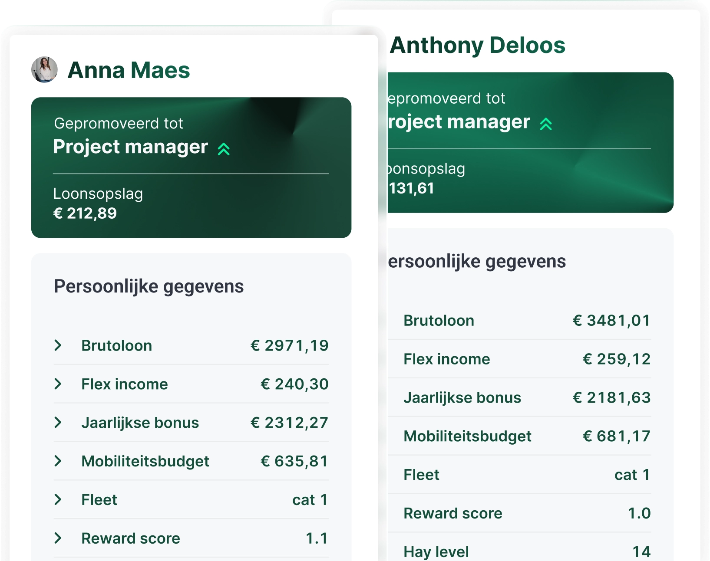
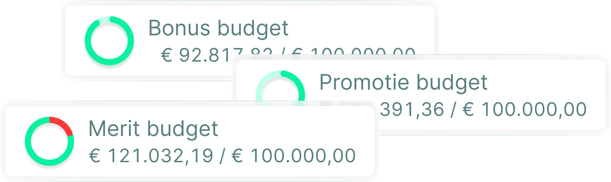
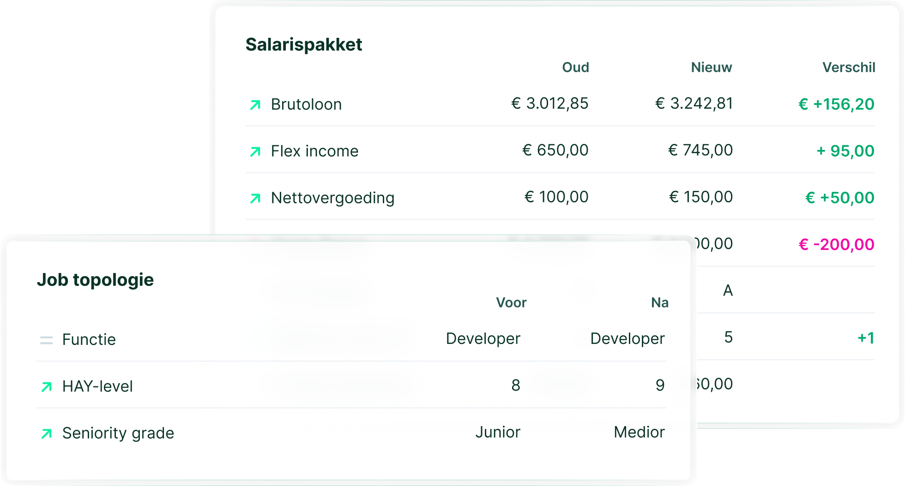

Van 2 maanden naar 3 weken
De looncyclus van 7.000 medewerkers in 21 landen, voor een deel van hun populatie.
HR-dienstverlener
Download de case (pdf)TODO — foto nodig
Hier komt het portret van Nick, staand formaat, natuurlijk licht. Zolang die foto er niet is, blijft deze plek zichtbaar leeg
Bonus & Merit
Maak komaf met Excel. Beheer loon, bonus en promotie in één platform. Ontdek Youbo.
19.000 medewerkers · 21 landen · ISO 27001:2022
Nick laat je zien wat Youbo voor jouw proces doet. Geen algemene verkooppitch, wel een concrete blik op jouw looncyclus.
TODO — te bevestigen: de lijst klantnamen die getoond mogen worden. Het concept toonde ook Protime; daarvan is er geen case en geen logobestand, dus staat het hier niet. Van nieuwe namen hebben we telkens een donkere logoversie nodig.
Het platform
Gedaan met splitsen en consolideren van excels. Bye-bye versies en errors.
Iedereen kijkt naar dezelfde stand van zaken, op hetzelfde moment
Datagedreven volgens je loonbeleid, loonbanden, prestatiescores en andere parameters. Wat jij verkiest.
| Medewerker | Score | Voorstel |
|---|---|---|
| Laura Jacobs | Strong | + 3,4% |
| Rachid El Amrani | On track | + 2,1% |
| Anne Peeters | Strong | + 3,7% |
| Jonas De Smet | On track | + 2,0% |
De manager volgt het voorstel of wijkt gemotiveerd af
Minder overschrijdingen. Meer controle, per budget en in totaal. Geen budget slippage meer.
Beschikbaar budget
€ 184.250
Elke beslissing van een manager telt hier meteen mee
Bewijs
Van 2 maanden naar 3 weken
De looncyclus van 7.000 medewerkers in 21 landen, voor een deel van hun populatie.
HR-dienstverlener
Download de case (pdf)Twee werkweken tijdswinst
204 medewerkers, verdeeld over 27 afdelingen.
Chemie & technologie
TODO — te bevestigen: 204 of 370 medewerkers. De bronnen spreken elkaar tegen Download de case (pdf)7× sneller
6.214 medewerkers in 2 landen, 130 managers in dezelfde cyclus.
Mediagroep
TODO — te bevestigen: 7× sneller of van 2 weken naar 2 dagen, en 6.214 of 4.500 medewerkers Download de case (pdf)Live op 3 maanden
450 bedienden, van eerste gesprek tot eerste cyclus.
Infrastructuur & logistiek
TODO — te bevestigen: in hoeveel landen Download de case (pdf)Meerdere werkdagen bespaard
300 medewerkers, verspreid over 8 bedrijven.
Groep van ondernemingen
TODO — te bevestigen: logobestand van Anchr, in een donkere versie Download de case (pdf)TODO — te bevestigen: Jana levert de vijf case-pdf's aan. Tot dan wijzen de downloadlinks nergens naartoe. De carrousel is gebouwd om van vier naar acht cases te gaan zonder herontwerp.
De cyclus




| Afdeling | Klaar | Budget |
|---|---|---|
| Finance Belgium | 8/8 | € 42.100 |
| Operations | 12/16 | € 58.440 |
| Commercial | 9/14 | € 49.210 |
| Technology | 9/12 | € 34.500 |
TODO — te bevestigen: dit zijn de bestaande productschermen van youbo.io, met voorbeeldcijfers. Zodra er toegang is tot de app maken we schermen op maat van deze pagina
Vandaag in gebruik
Vooruitkijken
Start nu: ontdek loonverschillen en werk ze tijdig weg. Bewijs dat elke loonbeslissing consequent is.
De Europese richtlijn is in België nog niet omgezet voor de privésector. Dit gaat dus over paraatheid, niet over een verplichting die vandaag al geldt.
Zie waar het verschil zit, voor iemand het je vraagt
Integraties
Youbo past in elk hr-landschap en connecteert met je systemen voor payroll, performance en core hr.
TODO — te bevestigen: welke lijst klopt. Het campagneplan noemt daarnaast Treality, het concept noemt Protime en Workday. Hierboven staan enkel de drie die in beide bronnen voorkomen.
In hun eigen woorden
“Dankzij Youbo hebben we onze budget slippage volledig weggewerkt in amper 2 cycli.”
 Pieter-Jan Boden
People director, SD Worx
Pieter-Jan Boden
People director, SD Worx
“Toen ik een demo zag, wist ik: hier hebben we op gewacht.”
“Youbo helpt om de loonkloof weg te werken.”
 Mieke Catthoor
Compensation & benefits, DPG Media
Mieke Catthoor
Compensation & benefits, DPG Media
“Dankzij Youbo is de interne billijkheid toegenomen. Door de transparantie voer ik nu betere inhoudelijke gesprekken met mijn team.”
“Als Youbo morgen zou verdwijnen, zouden we vooral het overzicht missen. In één klik zien we de jaarkost en het totale loonpakket van de werknemer.”
TODO — foto nodig van Bart Verhoeven, Joris Valkenborgh en Evi Van der Vliet. Half met en half zonder foto werkt niet: als die foto's er niet komen, gaan alle vijf de quotes zonder portret.
Voor je het vraagt
Van het eerste contact tot de eerste looncyclus duurt het gemiddeld drie maanden. De precieze doorlooptijd hangt af van je organisatie, je beschikbare loondata en je loonbeleid. Een developer begeleidt de inrichting, daarna werk je zelfstandig verder.
Youbo wordt gebruikt door bedrijven vanaf 50 medewerkers. Het grootste rendement ontstaat doorgaans vanaf 300 à 500 medewerkers, of zodra het Excelproces complex en persoonsafhankelijk wordt.
Dit is de vraag die iedereen stelt, en ze hoort op de pagina. Wat hier komt te staan, beslist Youbo zelf.
TODO — te bevestigen: het antwoord op de prijsvraag. Jana loopt dit na met de partners en met Nicole. Een bereik of de logica achter de prijs is verdedigbaar, geen antwoord is dat niet
Ja. Je loonbeleid, organisatiestructuur, goedkeuringsflows en marges vormen het uitgangspunt. Youbo neemt ook complexe regels en formules over.
Ja. Je kunt budgetten fijnmazig verdelen over meerdere hiërarchische niveaus en Youbo inzetten in verschillende landen.
Youbo past regels consequent toe, bewaakt afwijkingen en maakt elke loonbeslissing onderbouwd en traceerbaar.
Demo
Reward expert Nick laat je zien hoe Youbo aansluit op jullie loonbeleid, structuur en systemen. Hij neemt persoonlijk contact op.
Liever meteen iemand spreken
TODO — te bevestigen: Nicks agendalink, telefoonnummer en e-mailadres. Zolang die er niet zijn, staan hier geen verzonnen gegevens
Nick toont je Youbo op jouw eigen looncyclus